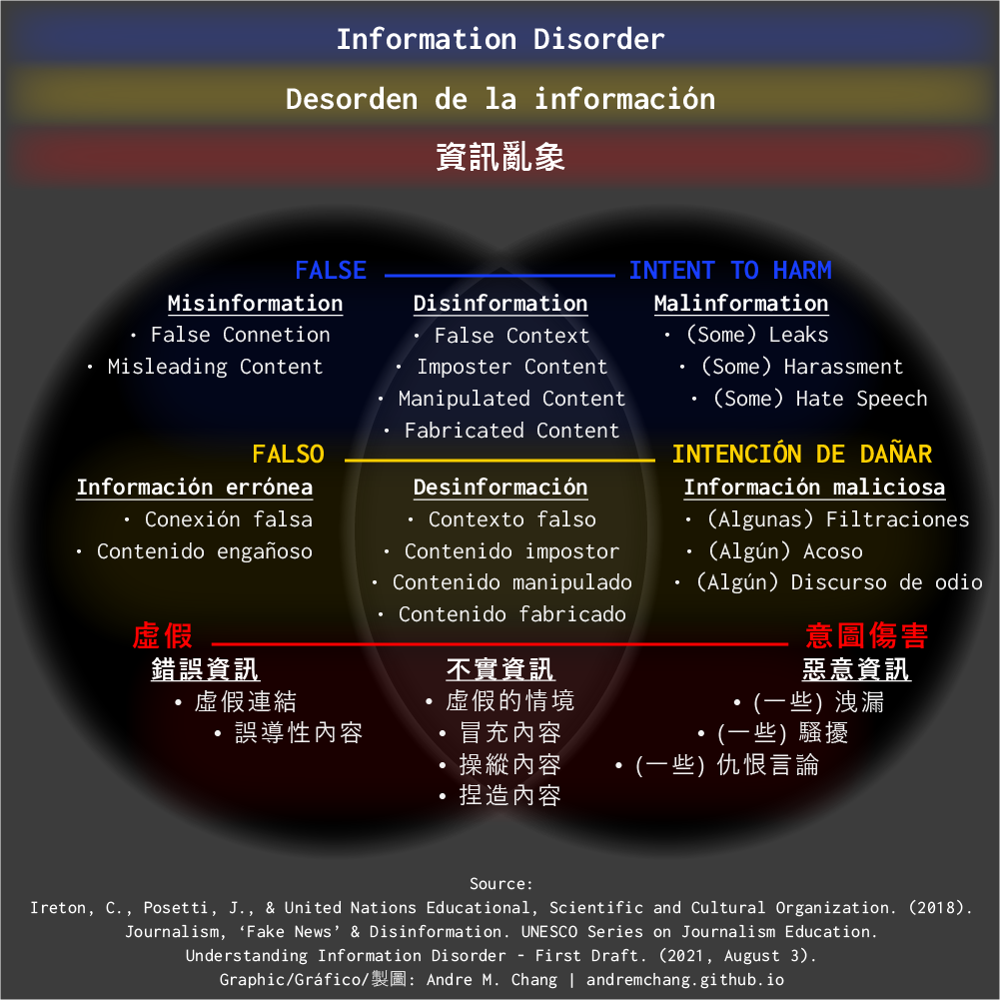

Gráfico | Entendiendo el desorden de la información Posted by Andre in South America on September 24, 2024, and updated on October 28, 2024.  Educación periodística: Información errónea, desinformación e información maliciosa